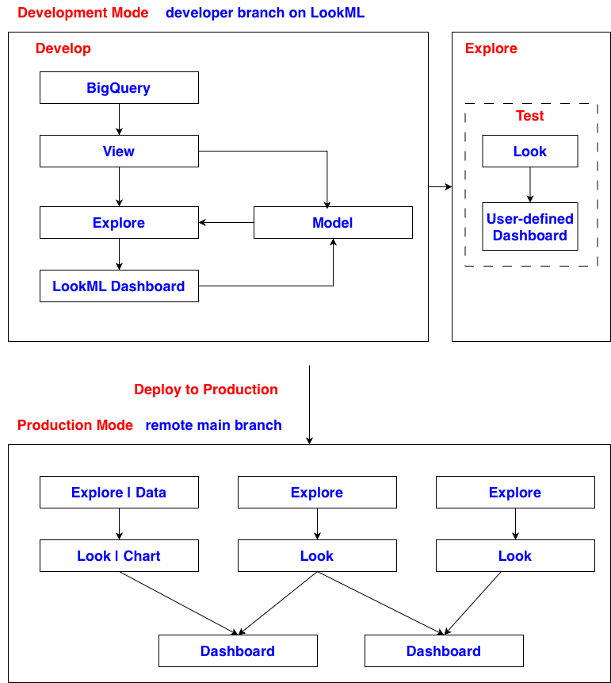
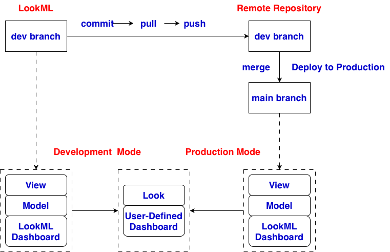

Introduction
Development Mode & Production Mode

- Development Mode
- Edit view, model, and dashboard LookML files
- Validate LookML
- Test
- Use Explore to create Look and user-define Dashboard
- View LookML Dashboards defined in *.dashboard.lkml in Folders
- Commit to local dev branch
- Push to remote dev branch
- Merge remote dev branch to remote main branch | Deploy to Production
- Production Mode
- Use the remote main branch as Production
- Use Explore to create Look and Dashboard
- Schedule or share content

- Development Mode
- Look and user-defined Dashboard use explore on LookML dev branch
- Production Mode
- When switch to production mode, Look and user-defined Dashboard created in development model use explore on remote main branch
Git Workflow
Schedule
- In Production mode, schedule sending a dashboard to specific email addresses